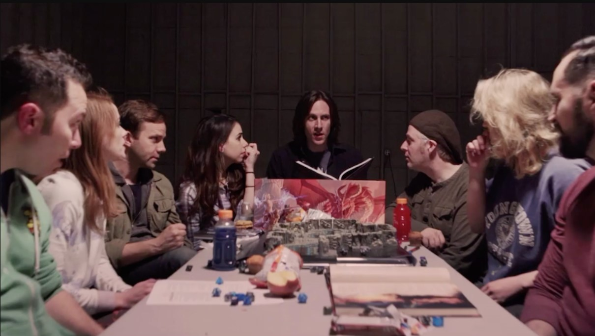
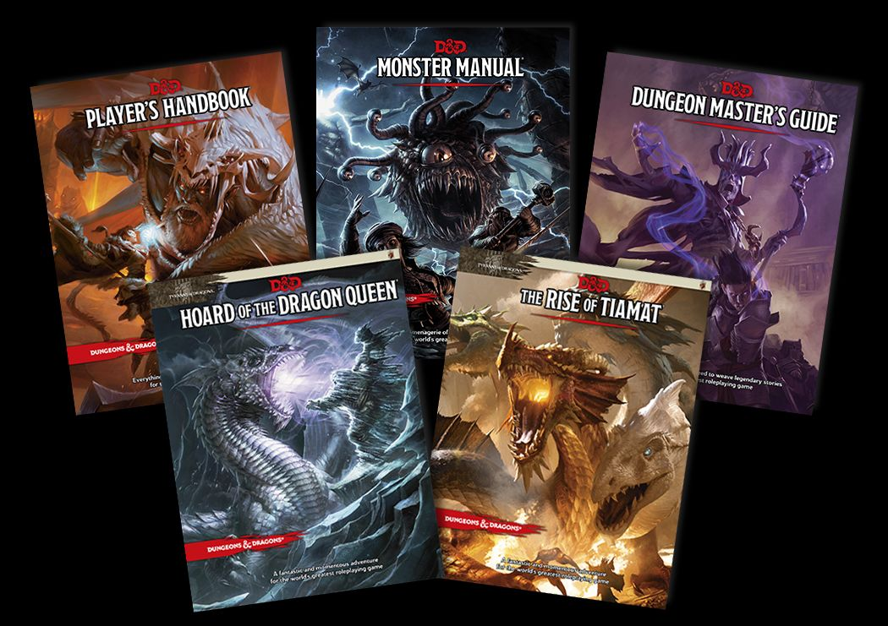

Once you start to play, there may have a lot of words that will make no sense to you. Here's a guide so you know the basics.
Dice
During the game, you will hear people saying "roll a d20" or something among those lines. Those are the dice you will be using to measure how successful you are at doing your actions. From checking animal tracks to attacking. You'll be using the 20 sided dice for a lot of checks, and, depending on your class, weapons, or spells you'll use, you will use other dices. A normal set of dice have a d4, a d6, a d8, a d10, a d12, a d20, and a d100. The d100 is also known as the percentage dice and there is a good chance you won't use it much, unless you are the DM

DMs
DM is the short version of Dungeon Master. The DM is the one person that will be guiding the plot line of the story. In D&D you play your own character in the adventure with others, while the DM is the one taking care of monsters and the overall campain.
Campains and Homebrewing
Campains are the plot, the adventure itself. While some people prefer to create their campains entirely from scratch, there are DMs that prefer having pre-set campains to guide them. There are a lot of campain ideas and books to guide DMs with the plot. From creating NPCs (Non-Player Characters) to finding magical items for treasures. Of course, there are official rules and items in the official D&D books, but the goal of the game is to have fun. That's when Homebrewing comes in hand. Homebrew is pretty much anything that is not official from D&D.
